| |
.
Florida 2025
Universal Orlando Resort Fun Spt Busch Gardens Tampa Sea World Orlando Walt Disney World Resort
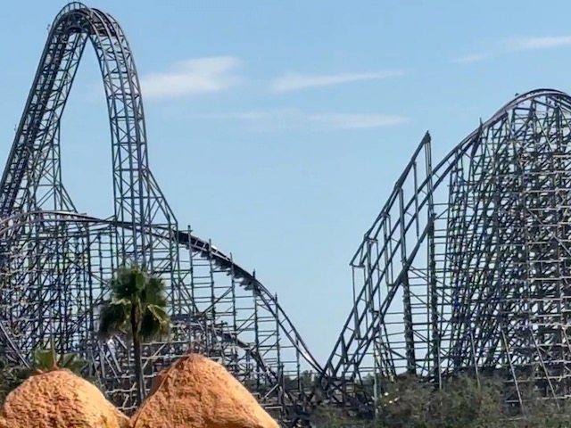
All right. Time to briefly head out of Orlando and into Tampa as we return to.......you guessed it. Busch Gardens Tampa. So good to be back here after nearly 18 years.
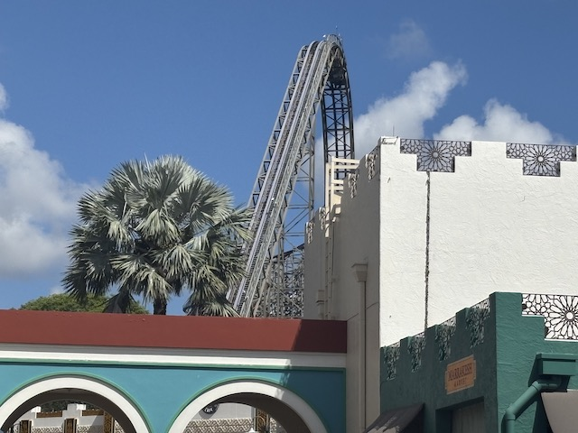
OK. Where should we head over to first?
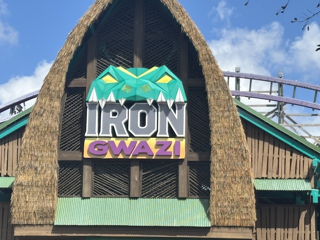
Yeah. Time for the final hyper-anticipated coaster of the trip. Iron Gwazi.
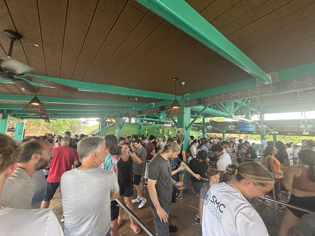
*Sigh* Unfortunately, I had to wait 45 minutes to get on Iron Gwazi. Now looking at this line, this at a normal park, would be a 20 minute line. Annoying, but not a huge deal. It's busy, but not intolerably busy. HOWEVER, that would imply that they are running the ride at full capacity with fast operations. And......THAT IS NOT THE CASE!!!! THEY WERE CONSTANTLY STACKING BECAUSE THE OPERATIONS WERE THAT DAMN SLOW!!!! THIS IS UNACCEPTABLE!!! GET YOUR SH*T TOGETHER, BUSCH GARDENS TAMPA!!!!
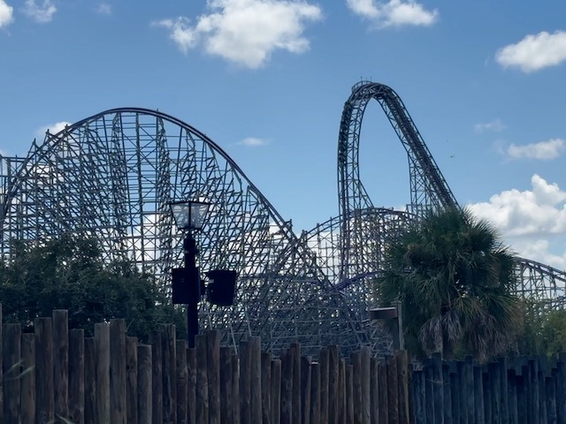
So this is one of the most notable and highly ranked RMCs out there. And while it's not my favorite RMC (Steel Vengeance is still #1), it's still an amazing coaster and a close 2nd best RMC (as well as 2nd best coaster in Florida). So yeah. This made it into our Top 10 Steel Coasters
While Iron Gwazi is amazing, the part I most anticipated was also the part that I was most let down on. The Death Roll. I expected something truly insane. And while still a ton of fun, this wasn't any crazier than the Inversion first drops on Twisted Timbers, Wind Chaser, or Medusa Steel Coaster. Basically, it wasn't a try-to-murder you element like the airtime on Skyrush or the Mosasarous Roll on Velocicoaster.
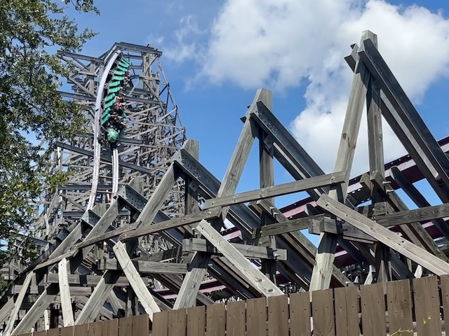
But that's OK, because the rest of Iron Gwazi is just so damn good. Honestly, the personal highlight for me was the Wave Turn, which.......SUCH STRONG AIRTIME DONE SIDEWAYS!!!! SO F*CKING GOOD!!!! It's just got such a strong snappy punch.
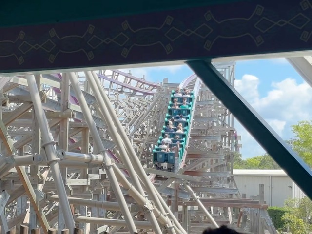
Honestly, the only real downside to Iron Gwazi is that its on the short side. But hey. They pack a TON of insanity into the time it does have. =)
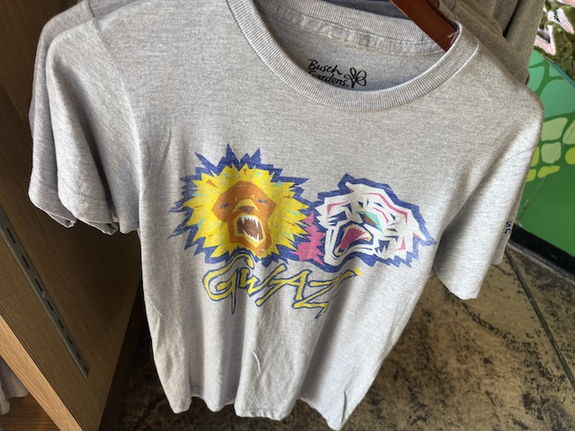
Hey look! I can buy an original Gwazi shirt here (I may not have, but I did purchase an Iron Gwazi Shirt since.....it's got a great logo and I have so few coaster shirts nowadays)!
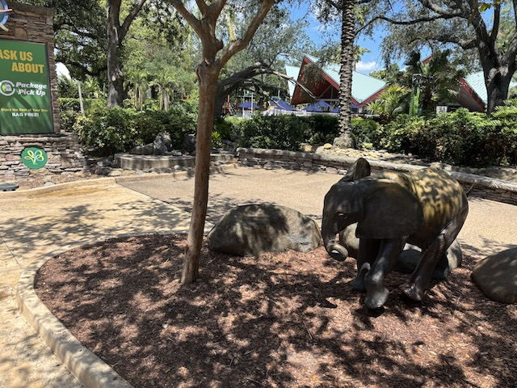
Hmm. That sure is a funny looking elephant.
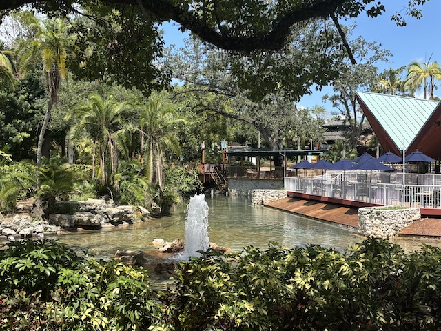
I know the operations have really gone downhill here, but not only is the coaster collection here great, but it also just has a really nice atmosphere.
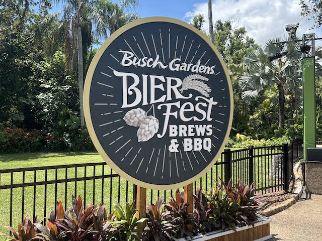
Not today, though I'm not gonna lie. A Food & Beer Festival here sounds great (so long as they don't cheap out and provide quality food and beer. But it does have potential).
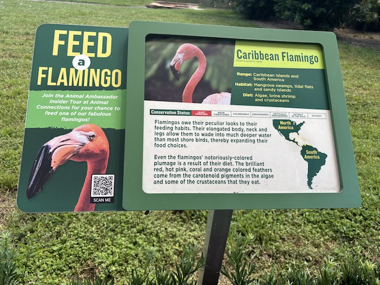
Why hire a zookeeper to do that when we can have guests PAY US to feed the flamingos for us? #BudgetCuts
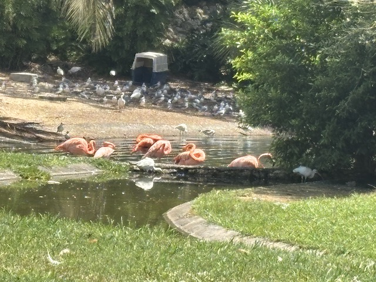
Shh! Don't tell the guests that we replaced all our flamingos with the pink plastic kind.
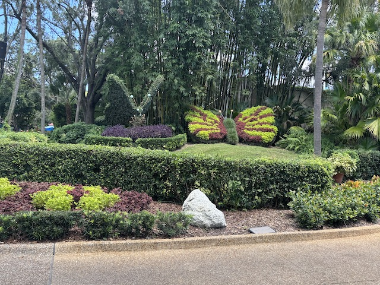
The shrubbery artwork here is really nice.
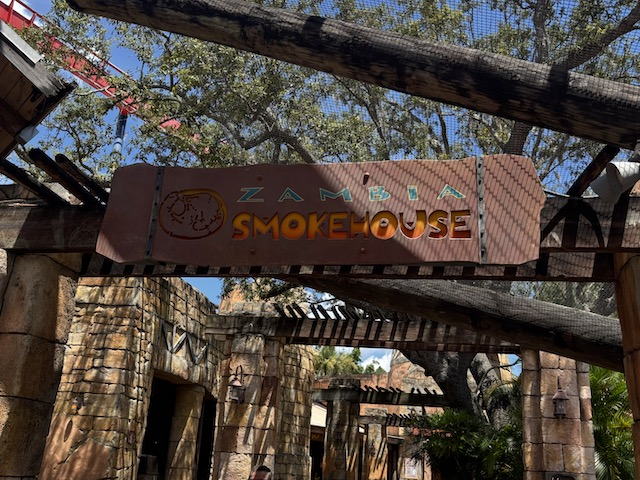
OK. Time for an Incrediblecoasters Rant. The operations at Zambia Smokehouse were ATTROCIOUS!!! It wasn't too busy inside, but it still took us 15 minutes to get our food. THIS IS UNACCEPTABLE!!! AND BY THE WAY!!! USUALLY WHEN RANTING ABOUT OPERATIONS, I'M YELLING AT LAZY EMPLOYEES FOR SLACKING ON THE JOB!!!! BUT NOT THIS TIME!!! THE OPERATIONS WERE SLOW BECAUSE THE RESTERAUNT WAS HORRENDOUSLY UNDERSTAFFED!!! THE ONE EMPLOYEE WAS BUSTING HER ASS AND DOING A GREAT JOB!!! BUT WHEN YOU'RE ONE PERSON MANAGING DAMN NEAR EVERYTHING, THINGS BACK UP DESPITE BEST EFFORTS!!! THIS IS ENTIRELY ON BUSCH GARDENS TAMPA MANAGEMENT AND CUTTING STAFF!!! FIX THAT BECAUSE THIS IS UNACCEPTABLE!!!! GIVE THIS EMPLOYEE ANOTHER PERSON TO HELP HER OUT!!! BOTH FOR MY SAKE AS WELL AS HERS (I actually did genuinely complain about this and brought this up in a polite G-rated manner when they offered a guest feedback survey)!!!
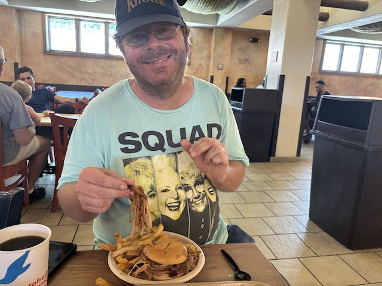
As for the food, it's hard to tell. I didn't eat here today since.......I'm not hungry at all, and don't want to spend money on food (this trip is on as much of a shoestring budget as a Florida trip can reasonably be) I won't be able to eat due to lack of appetite. But I remember really liking the food here back in 2007, and Jason really liked it today.
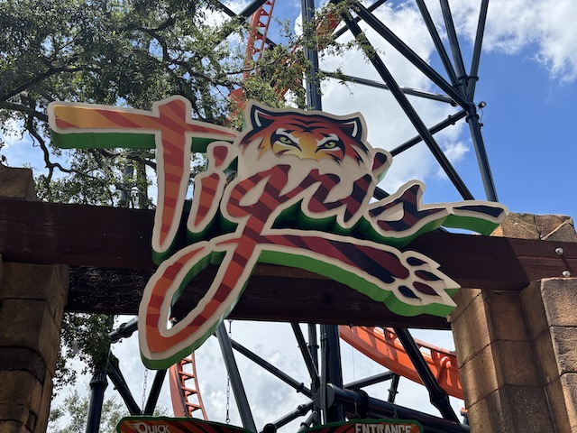
OK. This is IncredibleCOASTERS. And Iron Gwazi wasn't the only new coaster Busch Gardens Tampa added since my last visit.
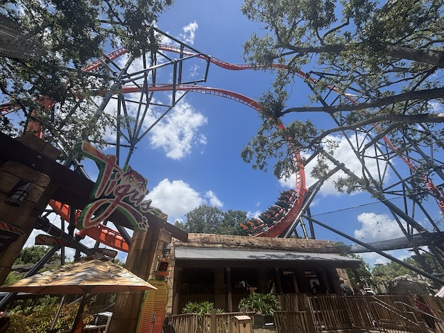
Yeah. This isn't anything special. It's just another Premier Skyrocket clone.
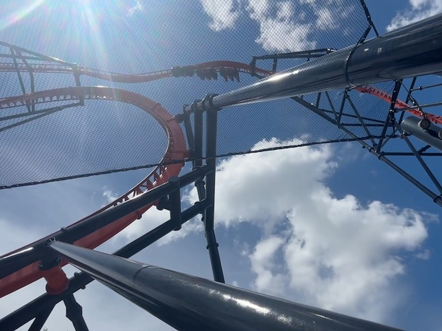
It may be a common clone, but at least these are still really fun rides.
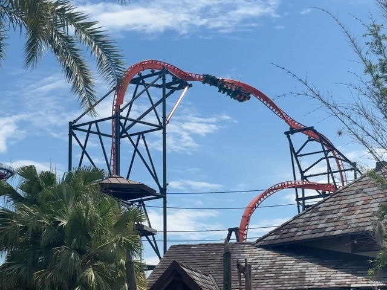
Well, I had a blast on Electric Eel......I mean Tigris. Hey. It fits in beautifully with the park, looks great, is a lot of fun, and it's a new credit for me. Thumbs up.
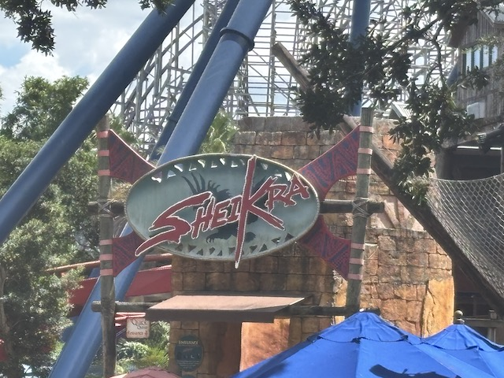
OK. Time for our first reride coaster this BGT visit.
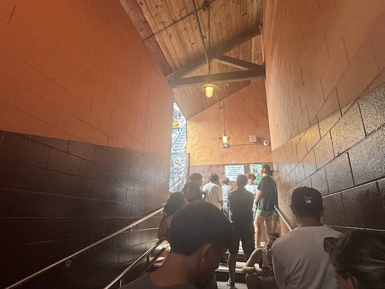
*Sigh* Once again, BGT's HORRENDOUS OPERATIONS strike again. At a properly run park, this probably would be a 20-30 minute wait. But because its being so poorly run, I unexpectedly waited over an hour for it!!! GAH!!! Really not happy about that. Especially upon remembering marathoning this ride, and doing a whole videography session last visit in a shorter timeframe than my wait for this one ride on it. >=(
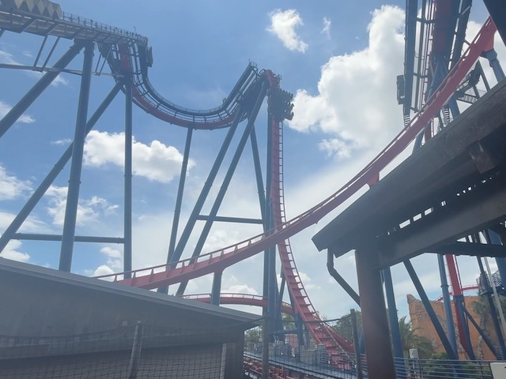
Now I've ridden countless more Dive Coasters since my last visit (and even have one in my half of my home state in Emperor). So naturally, a lot of the initial shock and awe of the ride has worn off simply due to far more similar rides being built and ridden since then.
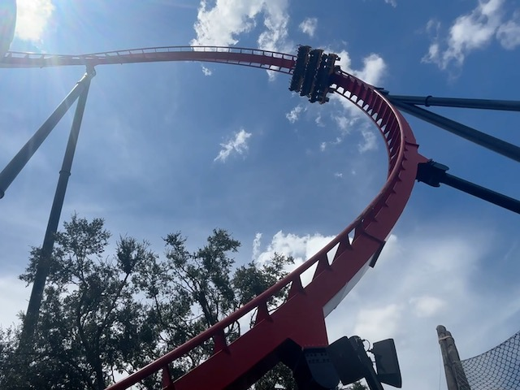
Regardless, Sheikra is still a FANTASTIC ride and my 2nd favorite Dive Coaster (Just behind Griffon).
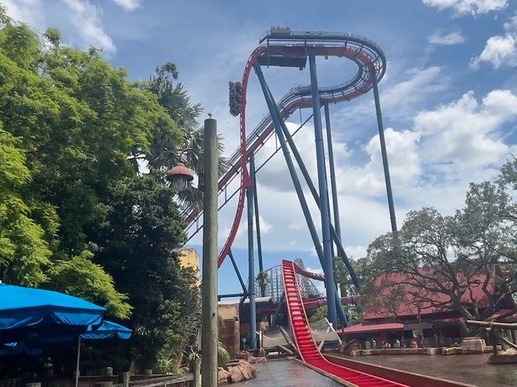
That drop still is amazing (it also helps that it still has the original restraints that give you more airtime).
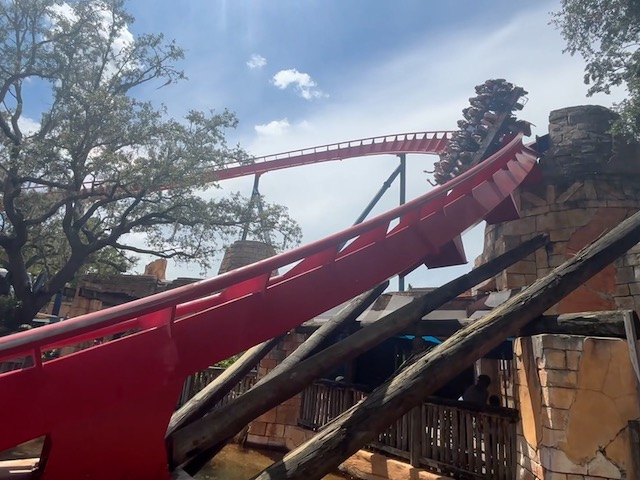
It has the great vertical first drop, the fun inversion. Second vertical drop. All that's missing is.....
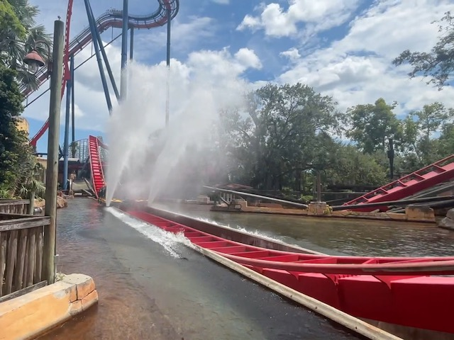
SPLOOSH!!!!
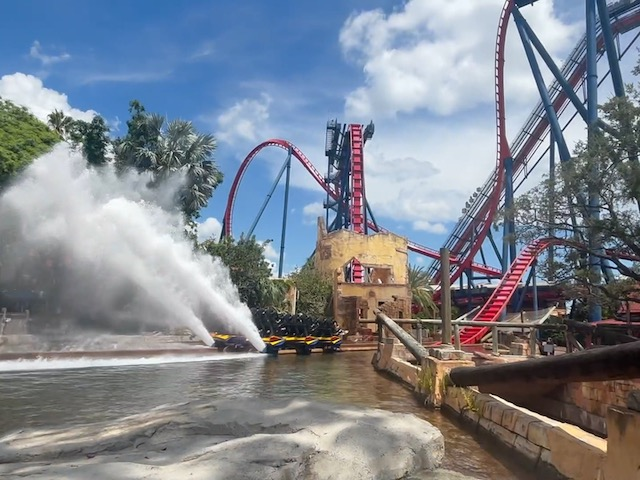
I know a splashdown section is pretty common on many Dive Coasters since.....they got it from Sheikra. But on most of those, it just feels tacky and forced in, whereas here, it blends in with the theme on the ride (it helps that this was the first one to have a Splashdown section).
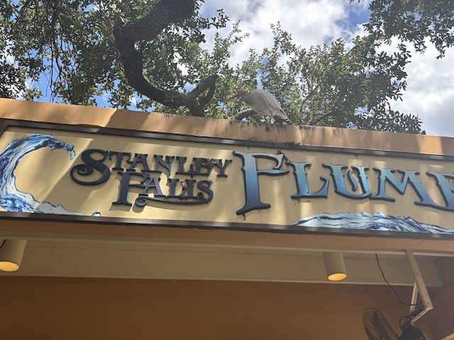
All right. Water ride time.
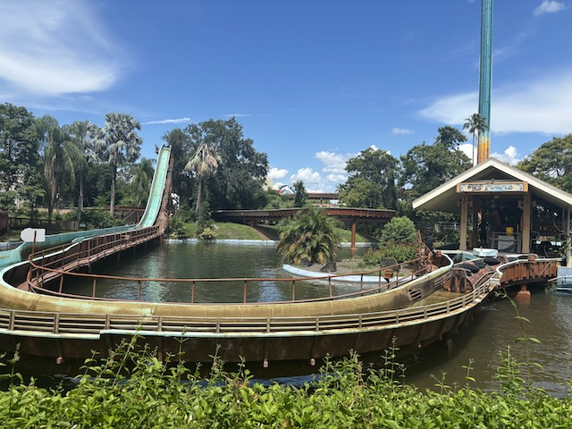
So right before we were about to board, it had a breakdown, and......considering how maintenence was called and they were evacuating people, this looked to be an extended delay. We didn't wait that long and this isn't a high priority ride for us. So we just decide to leave. Meh. We could always just ride it next visit. Well......Nope! For shortly after our visit, Busch Gardens Tampa announced that Stanley Falls was permanently closing!
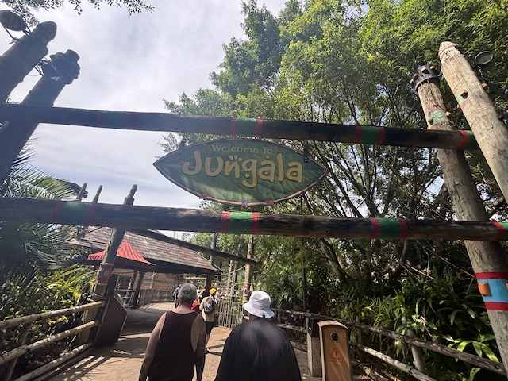
I know this isn't something I cared about, but it's still cool to see the new attraction that was under construction last visit be built and finished.
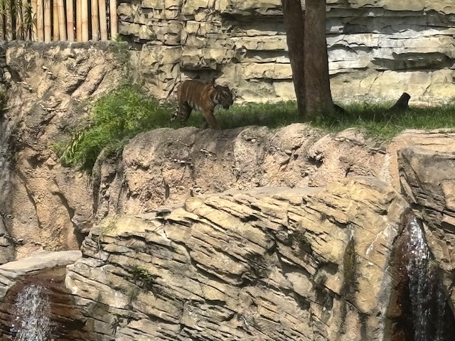
Excuse me, but which way to Tigris?
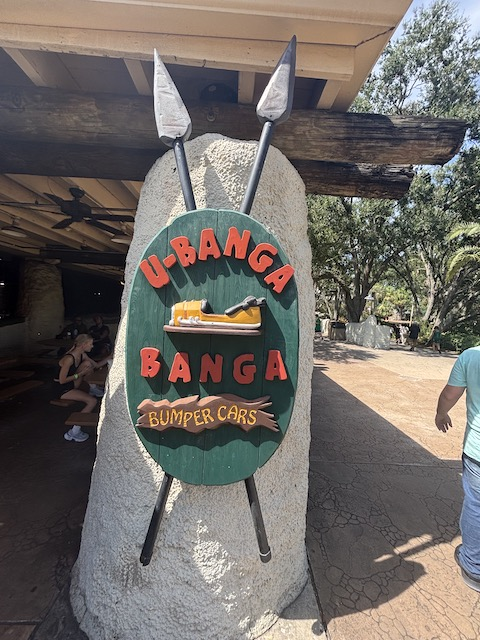
On the one hand, this is probably the coolest name ever come up with for bumper cars. Named and themed great. Thumbs up for that.
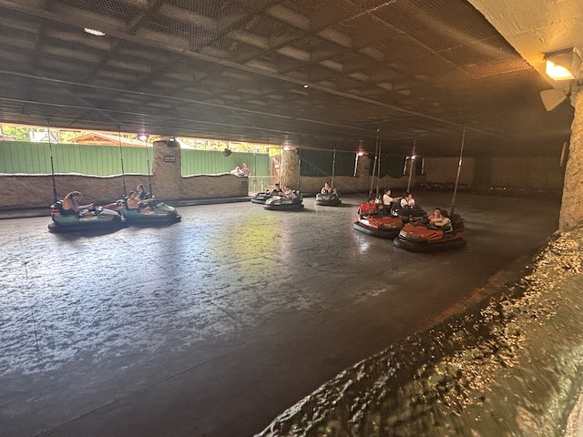
On the other hand, these bumper cars not only had a stupid One-Way Rule, but they went super slow and the bumping was so tame that it was more of Tapper Cars. Thumbs down for that.
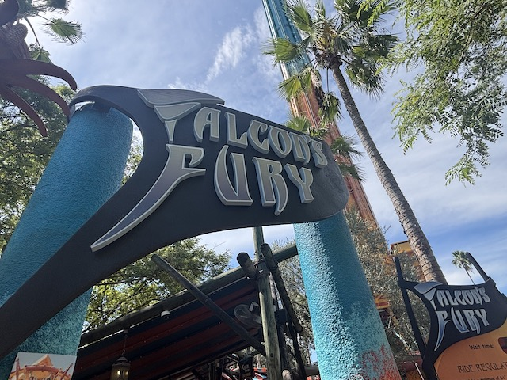
This may not be a new credit, but it is one of the new-for-me attractions at BGT that was a HUGE priority.
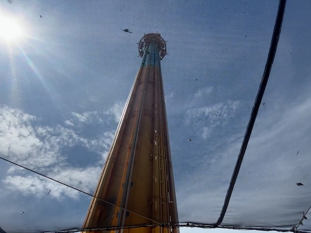
So this is one of the few Face-Down drop towers, where before you drop, the ride tilts you 90 degrees and drops you face down (it brings you rightside up right before hitting the brake run). So yeah. This ride FORCES you into the Lex Luthor faceplant position I use as a hack.
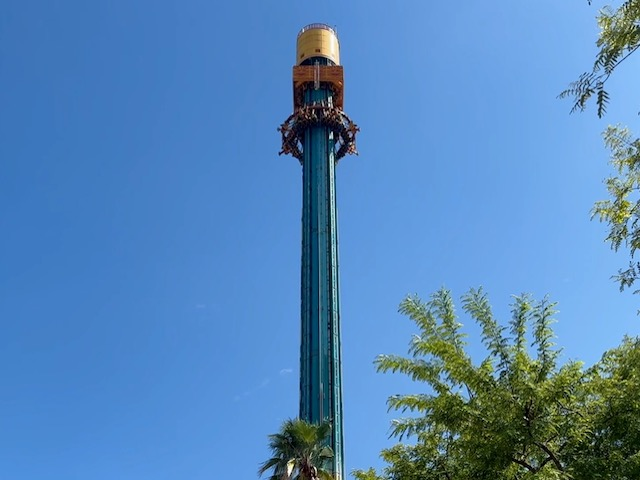
And yeah. This is (with the exception of Florida Tower of Terror) my favorite drop tower. Not exactly a surprise that I love this ride so much.
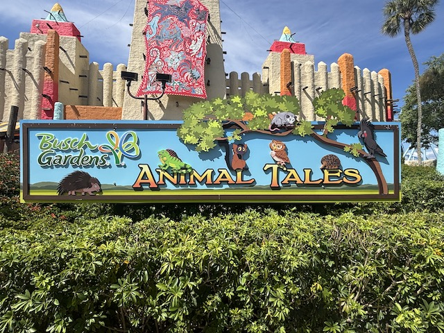
It looks cool, but sorry. No animal shows today.
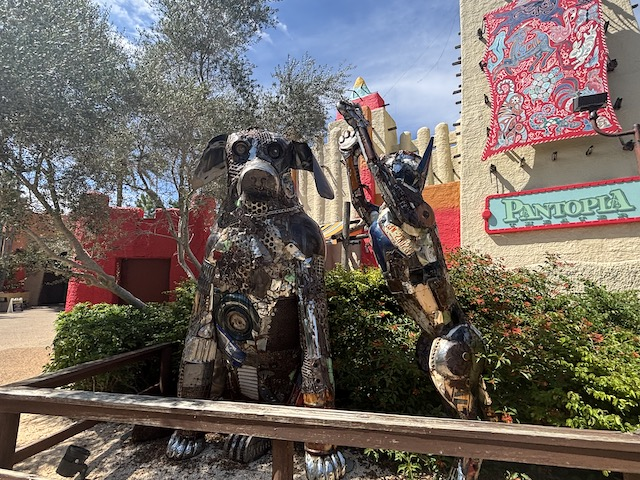
Seems kind of weird that this creepy Mexican dog is hanging out in the Timbuktu area of the park. Oh well. I still like it.
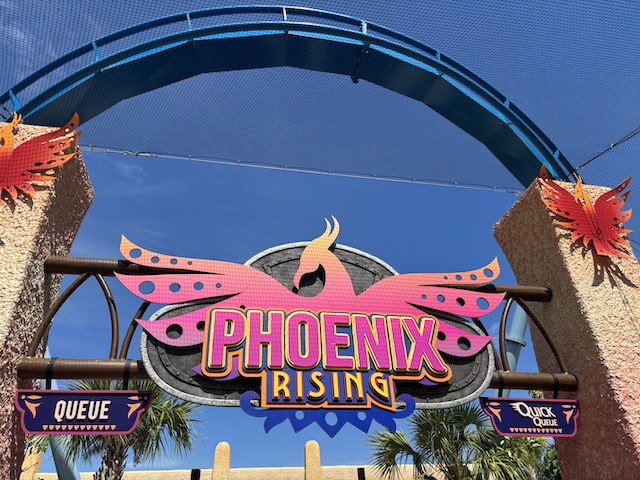
OK. Time for yet another new credit.
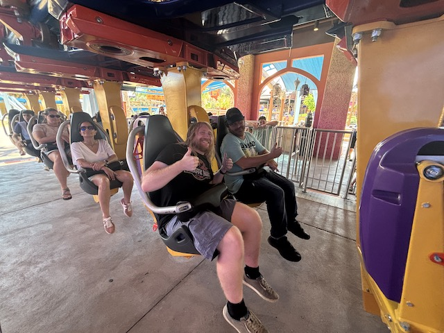
Jason's first ever B&M. =)
I know that this may seem surprising since......he has both SFMM and KBF as home parks (home to Batman, Riddlers, Scream, Tatsu, and Silver Bullet). Let alone visiting all the parks on the Mid-Atlantic Trip (lots of B&Ms on that trip), or even Universal a couple days ago. But......Jason is not a fan of major coasters (I really hope to get his tolerance up so that you can have fun on these rides instead of just waiting). So this was the first B&M on his coaster-level since.......this was my first time riding a B&M Family Coaster.
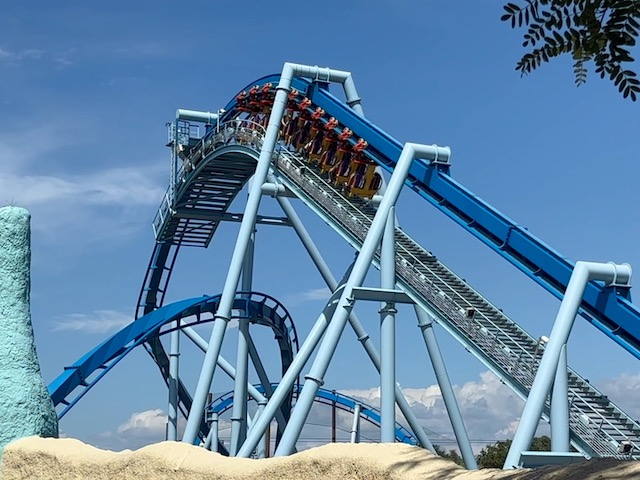
So yeah. Like I said. My first time on one of the new B&M Family Inverts. And......it just looks weird seeing this big boxy B&M track on a small layout.
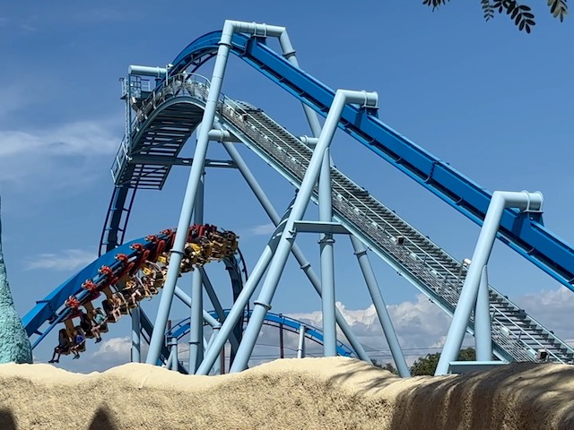
Jarring look aside, it's a fun family invert. I'd say it was on par with the Vekoma Family Inverts (Orkanen & Dragon Flier) and the one S&S Family Invert. And since I like those rides, Phoinex Rising was fun as well.
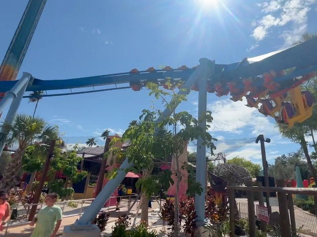
It's got a some nice forces and is just an overall really fun addition for families (and those with a low coaster tolerance).
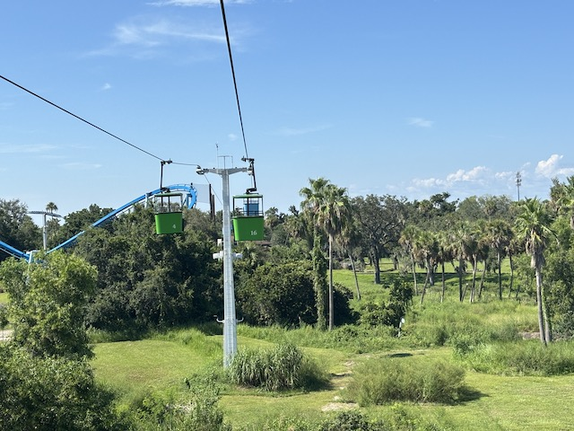
Gotta get to the other side of the park. Might as well go the relaxing way via the skyride.
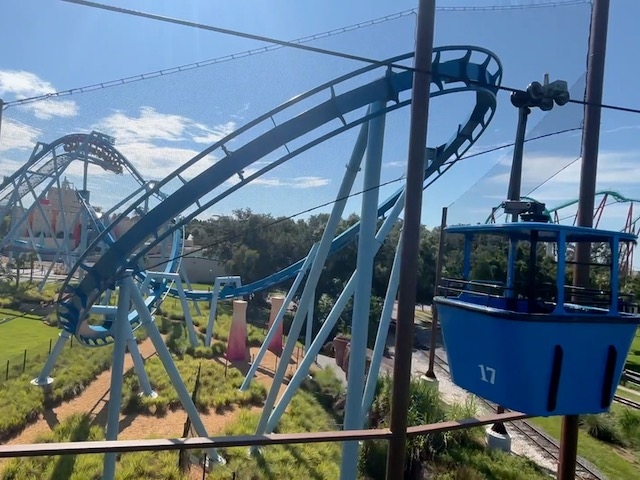
Phoinex Rising from the skyride (this thing is great for photography).
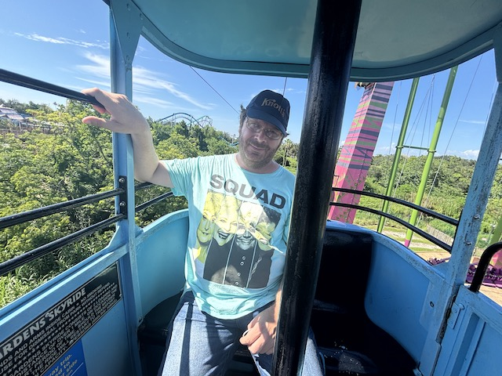
How's it going, bitches? I'm on a skyride! =)
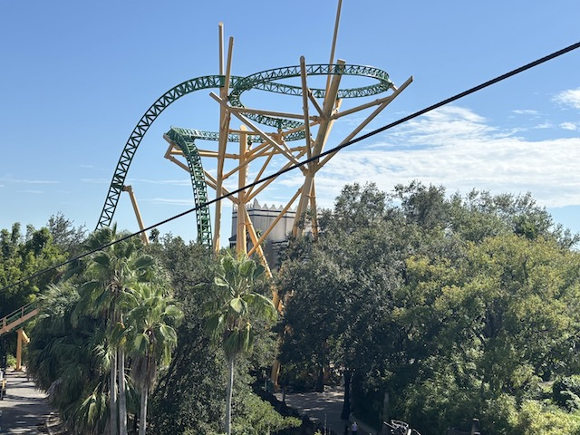
Hey Cheetah Hunt! How's it going!?
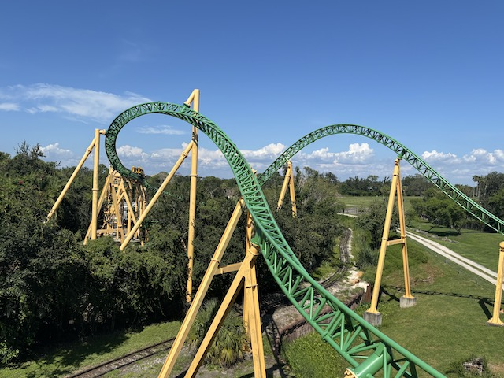
Uh oh. The train is just parked in the midcourse brake with no sign of movement or anyone in or near the trains. That's not a good sign.
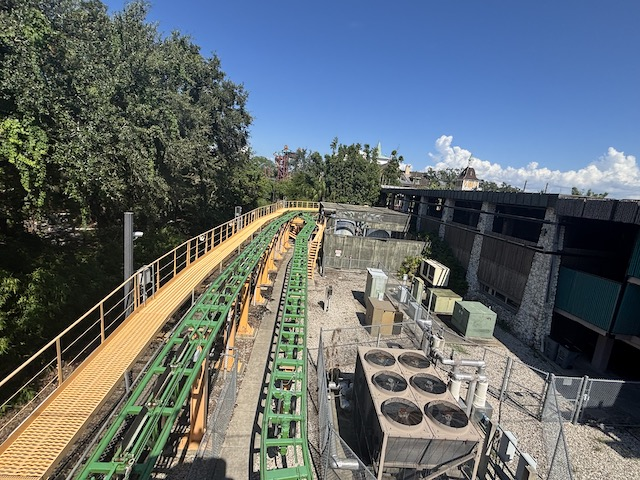
Please tell me my gut suspicions are wrong. ='(
Unfortunately, nope. Cheetah Hunt is closed. And it looks to be closed closed. *Sigh* This may not have been my biggest priority, but Cheetah Hunt still looked like a really fun ride and it was something I hoped to ride (even if it was a secondary goal, compared to the Primary 3 new coasters, or some of the amazing new dark and flat rides, or even some rerides on some Florida favorites). Bummer. Hope this will be open for me next time.
Fortunately for me, I have the ability to turn dangerous animals into pretty shrubs. Otherwise, I'd be f*cked. =)
I have even worse news. It's not just Cheetah Hunt.
Yeah. Cobra's Curse is closed as well.
Again, this was far from my biggest priority, and isn't even considered to be one of the better Spinners. But it still looked like fun, and it's a bummer its closed today.
Well, at least Montu is open today.
*Sigh of relief* No nightmare line on Montu. Thank god. Was able to have myself a little mini-marathon here. =)
Now, I LOVED this ride and it was in my Top 10 Steel Coasters up until 2016. But I've ridden so many more B&M Inverts since then. Does it still hold up?
HELL YES!!! THIS THING STILL KICKS ASS!!! Sure, it may have been demoted from my favorite B&M Invert to my 2nd favorite (Pyrenees beats it). But with how many more amazing rides I've ridden since, the fact that only one of its type has surpassed it after all these years is truly a testement to how great this ride is.
I hope you like positive Gs, cause Montu is gonna glue your ass to the seat.
There just is not a moment to breathe on this ride. Every inversion is so forceful.
There's a nice bit of whip in that Immelmann.
Speaking of whip, that Heartline Spin is SO AGGRESSIVE *drool*!!!
More B&M Inverts need Batwings. It's a shame that the only other one is on Afterburn (another AMAZING B&M Invert I love). Well.....at least the element is gaining some love on those cool new-age Vekomas (really need to ride one of those sometime).
So happy I was able to get a lot of rides on this world-class B&M Invert today.
*Sigh* This place is cool and all, but I still can't eat a child here, like over at Disney World. =(
Heading to the back of the park again. Might as well head over by train.
Oh man. There are so many great shots of Montu avaliable from the train.
God, I REALLY wish there was a train in this shot (so bummed we didn't luck out with the ride going while we were on the train).
How's it going, Mr. Giraffe? =)
"This may not be a trip traveled by train, but hey! I at least got to ride a train at some point on this trip!"
Just a quick reminder that Busch Gardens Tampa has one of the coolest atmospheres of any theme park.
Not much more to say. Just a relaxing ride on the train.
*Sigh* Normally, I would try the exclusive to BGT Phoinex Fizz Minute Maid. But unfortunately, this trip is so budget-stripped that even stuff like this is out of bounds for us. Bummer, since it genuinely looks good.
We may have missed out on Stanley Falls forever, but we can still do Congo River Rapids.
It may be a fairly generic rapids ride, but the super hot and humid Florida weather, plus riding with an interesting family made it a lot of fun.
*gasp* How could we have forgotten about Kumba all this time!?
*Sigh* We didn't. It was closed all day. This may not be a credit missed, since I rode this back in my original 2007 visit. But considering it's my 4th favorite coaster in Florida (Just behind Velocicoaster, Iron Gwazi, and Stardust Racers) and was my favorite at the time, this REALLY stung. Moreso than either the closure of Cheetah Hunt or Cobra's Curse (despite not having either credit, because Kumba is THAT good).
Unfortunately, there have been A LOT of rumors of Kumba being on its way out. Hell, this closure was NOT a surprise. It had been SBNO for nearly a year, including when I was on this trip. And.....there was A LOT of rumors swirling around Kumba closing and just not-reopening at all. The park repeatedly emphasized that it wasn't going anywhere. And sure enough, much to my relief. It reopened about 6 weeks after my trip. Yeah. I'm still bummed that I missed it on this trip. But more importantly, it was saved. They managed to fix it and it's still living on.
However, I'm still very concerned for Kumba. I know Kumba is a FAVORITE for the pessemistic demolish-happy enthusiasts, seemingly EAGER for Kumba to close (these enthusiasts annoy me). However, with Kumba, I do see the logic and I am worried that down the road, when it comes time for Kumba to require a total retrack like they did with the Incredible Hulk, or just did with Nemesis @ Alton Towers (now there's a park I need to get my ass to), they will just decide to scrap it instead of really investing in it.
Busch Gardens Tampa, I'm begging you that when that time comes, you spend that money and really invest in Kumba. Cause this isn't just any ordinary coaster. This is truly something special, and with just how insanely forceful this ride is, this ride goes above and beyond the rest of the B&Ms, and truly is something that stands out. It still holds up to this day, and it truly deserves to live on. This isn't just some generic crappy coaster that was cool in the 90s, but has been surpassed by all the bigger and better coasters, and deserves to be scrapped for something newer and shinier. No, this is still a stand-out and kickass coaster, and I REALLY hope the public sees that and appreciates it. And if you do unfortunately kill it, please at the very least, give it a final year so I can do an emergency Florida trip solely for Kumba (We're literally planning an Emergency Trip for a certain coaster that's closing. You most likely know which ride that is). Kumba deserves that love and respect. Don't pull a Kingda Ka on me please.
UPDATE: In the time between me finishing this update, but before I published it (the time where I was writing the new coaster reviews. BTW, those are now avaliable. Go check out our Iron Gwazi review, and the other new reviews as well), THEY DID IT!!! THEY FUCKING DID IT!!! THEY ANNOUNCED KUMBA'S DEATH!!! AND HOW MUCH NOTICE DID THEY GIVE!!? 2 WEEKS!!! NO FINAL YEAR!!! JUST 2 FUCKING WEEKS NOTICE!!! THE SAME NOTICE YOU'D GIVE YOUR BOSS WHEN YOU'RE ABOUT TO QUIT YOUR SHITTY JOB!!! YEAH!!! IT'S BETTER THAN WHAT CEDAR FLAGS DID FOR KINGDA KA (or any of the other coasters they axed in the middle of the night uncerimoniously) SINCE IT'S SOME NOTICE AT ALL, BUT NOT BY MUCH!!!
2 WEEKS NOTICE MAY BE ENOUGH NOTICE FOR ME IF SFMM OR KBF DECIDED TO SPONTANEOUSLY CLOSE WHATEVER GREAT COASTER, GET FINAL RIDES ON "Insert SFMM or KBF coaster of your choice"!!! IT'S ENOUGH NOTICE FOR LOCALS OR THOSE WITH A TON OF FREE TIME AND VERY HEALTHY FINANCES!!! BUT FOR A DUDE LIKE ME, IT'S BARELY FUCKING ANYTHING!!!
I KNOW I WAS VOWING TO GET OUT DURING KUMBA'S FINAL YEAR AND DO AN EMERGENCY KUMBA FUNERAL TRIP!!! HOWEVER, I EXPECTED THIS TO HAPPEN AROUND LIKE 2028 OR 2029!!! NOT LITERALLY A WEEK AFTER WRITING THAT AND ONLY HAVING 2 WEEKS NOTICE!! AND YEAH!!! MY FINANCES ARE FUCKING HORRIBLE RIGHT NOW!!! NOT ONLY BECAUSE OF MY HORRENDOUS MONEY SITUATION, BUT I LITERALLY JUST DID AN EMERGENCY WEEKEND FUNERAL TRIP FOR ARIE FORCE ONE (Surprise. That's what I was talking about earlier. Update on that coming as soon as these Florida updates are finished. Let's just say that Arie Force One is AMAZING, and my comment about Iron Gwazi being my 2nd favorite RMC is now already outdated. SOMEONE RELOCATE THAT RIDE CAUSE IT'S THAT GOOD!!!). SO MY FINANCIAL SITUATION IS EVEN WORSE THAN NORMAL NOW!!! AND WHILE A KUMBA FUNERAL TRIP (Such a trip would've basically been this trip, only without Disney, Universal, or Fun Spot) WOULD BE DIRT CHEAP, THAT ONLY IS THE CASE IF I HAVE A PLANTINUM SEA WORLD PASS!!! WHICH I NO LONGER DO (I let my pass expire in May, and didn't renew it since I had 0 plans to go out to Florida, Texas, or Virginia this year, and Sea World San Diego isn't worth the cost of the pass. Especially with my dogshit finances and the park not doing anything new this year)!!! IF I KNEW IN ADVANCE (Around May), I WOULD'VE TAKEN THE FINANCIAL HIT AND RENEWED SO I COULD DO THIS!!! BUT BECAUSE THEY ONLY GAVE ME 2 WEEKS NOTICE, I WOULD'VE HAD TO GET NEW PASSES, AND RUSH EVERYTHING THROUGH!!! AND I CAN'T AFFORD THAT!!! ESPECIALLY AFTER SPENDING THE MONEY ON ARIE FORCE ONE!!! AND THAT'S NOT EVEN GETTING INTO ME BEING COMPLETELY BOOKED FROM NOW UNTIL AFTER KUMBA'S ALREADY DEAD!!! SO THERE WOULDN'T HAVE EVEN BEEN TIME UNLESS I VOWED TO CANCEL ON PEOPLE I MADE THESE PLANS WITH FAR IN ADVANCE!!!
DEAR BUSCH GARDENS TAMPA AND CEDAR FLAGS, DO YOU WANT AN EXAMPLE OF HOW TO PROPERLY CLOSE A COASTER!? LET'S LOOK AT SILVER DOLLAR CITY!!!
Earlier this year, they announced that this would be the very last year for Thunderation, and that after the park's Christmas event, it would close forever to make room for some new ride in the future. So 2026 is the very last year to ride Thunderation. They announced this early in the year, essentially giving people a one year notice to get out to Silver Dollar City if they want to experience Thunderation, or get their final rides on it. Now I personally don't think Thunderation is good enough to warrant an emergency trip out just for it (though I do need to get back there for Time Traveler, as well as just for the fact that it's a great park. There is a major domestic trip in the works that Silver Dollar City is part of because of that. 2027 if life doesn't fuck me in the ass again). But I still genuinely appreciate that they're giving me advanced notice and the option to get out there for final rides on Thunderation, even if I decided that such a trip would not be worth it. Just having the option is appreciated.
Want an example that's not Americentric? I can provide that as well. Much like Silver Dollar City, Europa Park has announced that 2026 is the very last year for Euro Mir and that it too, will close after the 2026 Christmas event at Europa Park. Now this REALLY stings as I LOVED Euro Mir and thought it to be just such a fun ride (between all this news, I can assure you that the Top 10 Defunct Coasters List is going to drasticaly change YET AGAIN). So losing that ride REALLY makes me sad. But hey. At least Europa Park gave me a full years worth notice. Again, I would LOVE to do another Europe trip, and even briefly considered it for a second earlier this year, back before my finances totally got ruined thanks to a lying loathsome ex-friend (this bitch honestly deserves to go to prison. Fuck her!). So a trip as major as going to Europe is just COMPLETELY out of the question. Also, I feel like I'm too far away and there is too much new stuff in Europe for me to justify a quick weekend trip. It'd have to be a major multi-week expensive full blown international trip for me to justify going as far as Europe. And......yeah. That is COMPLETELY out of my budget. So unfortunately, my last Euro Mir rides from my one Europa Park visit will also be my ONLY Euro Mir rides. But hey. At least I got to ride it at all, and I'll always have the catchy as hell Euro Mir song on my phone. And hey. If I lived in any EU country (or in the UK. Stupid Brexit), I WOULD go out for an Emergency Euro Mir Funeral trip (I would have far more of Europe under my belt, and with dirt-cheap Ryan Air flights, doing so would be feasible for me. So a weekend Europa Park trip would make far more sense). So it's still GENUINELY appreciated that Europa Park is giving me advanced notice, even if I can't act on it. It still is giving advanced notice to enthusiasts who can.
SERIOUSLY BUSCH GARDENS TAMPA, WHEN CLOSING A MAJOR RIDE, I WANT YOU TO DO IT MUCH LIKE SILVER DOLLAR CITY AND EUROPA PARK WHEN THEY ANNOUNCED THEIR CLOSURES OF THUNDERATION AND EURO MIR (This goes for you too, Cedar Flags)!!!!
Now the one piece of optimism would be in their Kumba's death announcement, they announced that it would spiritually live on through something called Kumba's Revenge. The most popular enthusiast speculation for Kumba's Revenge and the biggest desire for it would be a B&M Giga, since BGT is one of the few parks that could support a giga, and they had it as an option on a park survey for a new ride a couple years ago. Eh....this DEFINATELY would work on the public in being a VERY marketable coaster, would DEFINATELY be good for business, and may possibly be better than Kumba. Fury 325 > Kumba, but Kumba > Orion. So if they do go down the Giga route, I'd appreciate them going more down the Fury 325 route.
However, if I had to pitch what I truly want Kumba's Revenge to be, I want it to be just a proper B&M retrack of the ride, only with a new paintjob, new theming, new trains, maybe a new element thrown onto the ride to give it more spice, and a ton of love and marketing to build a ton of hype for the ride. This is what I want. Yeah. I know many people would be dissapointed since it's not them getting a new ride, but rather just rehashing an already existing ride. But honestly, this is EXACTLY what I want from the park. Busch Gardens Tampa already has an AMAZING coaster collection, and Kumba is a GREAT ride. And I would much rather the park spend their money on maintaining and preserving their amazing coasters, as well as hiring more staff, paying them a living wage, and properly training them to operate the rides quickly and efficiently instead of taking out an amazing coaster, replacing it with possibly another amazing coaster, and neglecting the park in all the other ways and not investing in their staff and the operations. And if anything, the name Kumba's Revenge makes me optimistic that they're just retracking and retheming it since.....most replacements that share the same name are usually just the same ride, or if its a new ride, it incorpirates something about the original ride. I don't think a Giga would have that same connection (then again, United Parks could easily just be extremely lazy and not giving a fuck). So I'm optimistic that Kumba's Revenge is just them retracking, retheming, and heavily marketing Kumba (though I'm far less optimistic about them hiring more staff, treating them well, and improving the operations, which they ALSO need to do).
But if that's not the case and Kumba is dead dead, A: It's GUARANTEED onto the Top 10 Defunct Coasters List. B: They better make Kumba's Revenge something TRULY SPECIAL since it'd have PRETTY BIG SHOES to fill. C: I'd be forever grateful for me getting on it in 2007. D: Spain will jump up in priority due to Dragon Khan being very similar, and Port Aventura just gave that the Hulk/Nemesis retrack treatment to preserve that. So that'll make that even more special, especially if the reports of Dragon Khan being as forceful as Kumba are true. Let alone the fact that Port Aventura just looks like a great park. And I really want to get to Parque Warner Madrid as well (Spanish Velocicoaster looks REALLY good).
Seriously, it may look like an average run of the mill B&M. But this thing is just so damn forceful. That's the secret that makes it so good.
So sad that I'm only looking at Kumba today. ='(
I'm begging you to make Kumba's Revenge be the Hulk/Nemesis retrack treatment and putting more love and marketing into the ride. Cause Kumba truly is great and deserves it (4th best coaster in Florida, just behind Velocicoaster, Iron Gwazi, & Stardust Racers). Signed, Incrediblecoasters.
Oh no! Do NOT tell me you're about to do what I think you're about to do!
The monkeys are just reacting to what the F*ckface Regime has done to PBS (Luckily for Sesame Street, they're so big they can just be acquired by Netflix and not die).
Yep. It's credit whore time.
Attention everyone, the letter of the day is C. C is for credit whore, as demonstrated by Incrediblecoasters.
OK. I gotta get me a reride on Iron Gwazi. That ride is way too good to be a one-and-done.
Such an improvement over the original Gwazi and a BADLY needed addition to Busch Gardens Tampa (especially with all the other issues the park has developed since my last visit).
Just 5 minutes until the park closes. Gonna snag me one final ride on Sheikra. And this time, it was a walkon (wish that was the case earlier). And hey. It was great to finally get a front-row ride on Sheikra.
No problem. Despite all the flaws with the park and the MANY things you need to fix for my next visit, I still had a fun time.
So the original plan was to just go eat somewhere in Tampa since.....we're in the area. However.......I had to immedietly rush back to the hotel after our visit, killing our initial Tampa night plans. Oh, and Hello Orlando Starflyer BTW.
Wanting to do something cheap, but also exclusive, we hit up Waffle House.
I find it cool that this is my 6th time at Waffle House, and my 6th state I've eaten here.
#1. Missouri, #2. Oklahoma, #3. Georgia, #4. Virgina, #5. Arizona (went on a non-coaster trip), and now #6. Florida.
Hey. Cheap food that tastes really good. Big thumbs up. There's a reason I keep coming back here.
Somebody call Islands of Adventures! It looks like the Incredible Hulk has escaped yet again!
Sea World Orlando
Home
|